The one thing I have found we struggle with as a class is thinking. Our students are very well behaved and often do as they are told, but they cannot make the jump to expressing their thinking and opinion. To help support the development of thinking skills in the classroom, we are using visible thinking routines from Harvard’s School of Education’s Project Zero.
The first example of that was to do the See. Think. Wonder. routine using the book, ‘Possum Magic’.
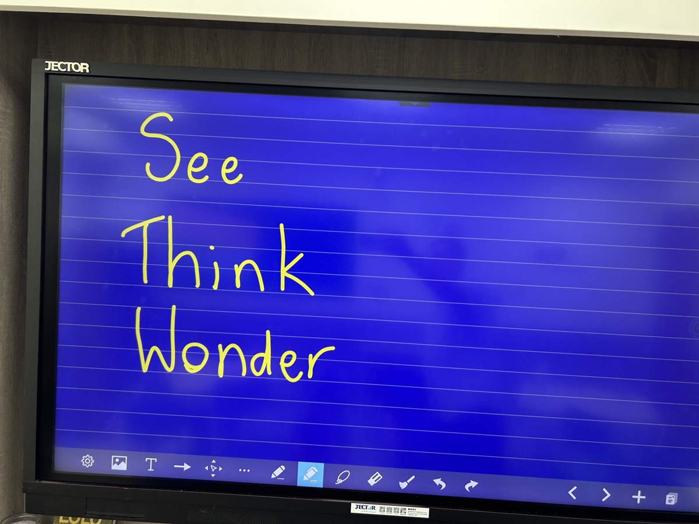
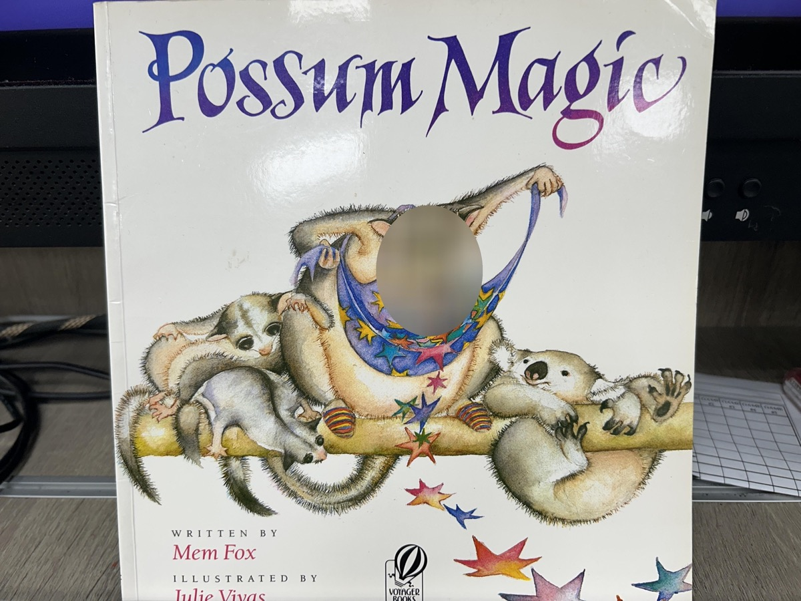
We are learning about reading comprehension techniques. As you may remember, I am reading the book ‘Lulu and the Brontosaurus’ for the class and we are using the scaffolds of Characters, Setting, Problem and Solution to reflect on what is happening in the story. Students are making bookmarks with these reflection prompts so they can refer to them continuously as they read.
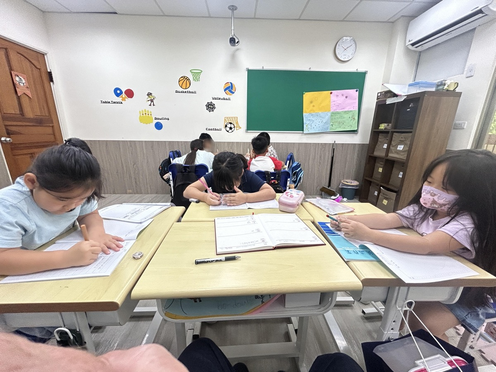
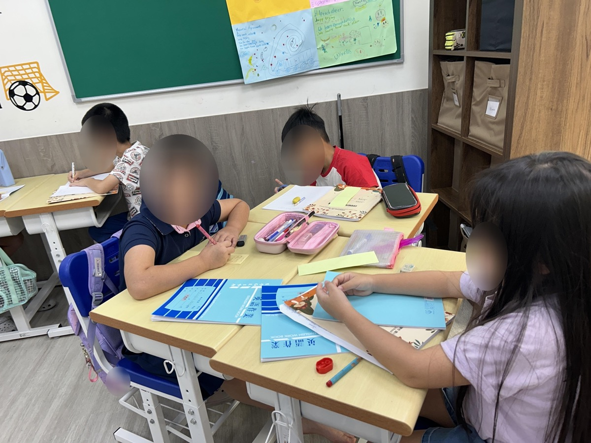
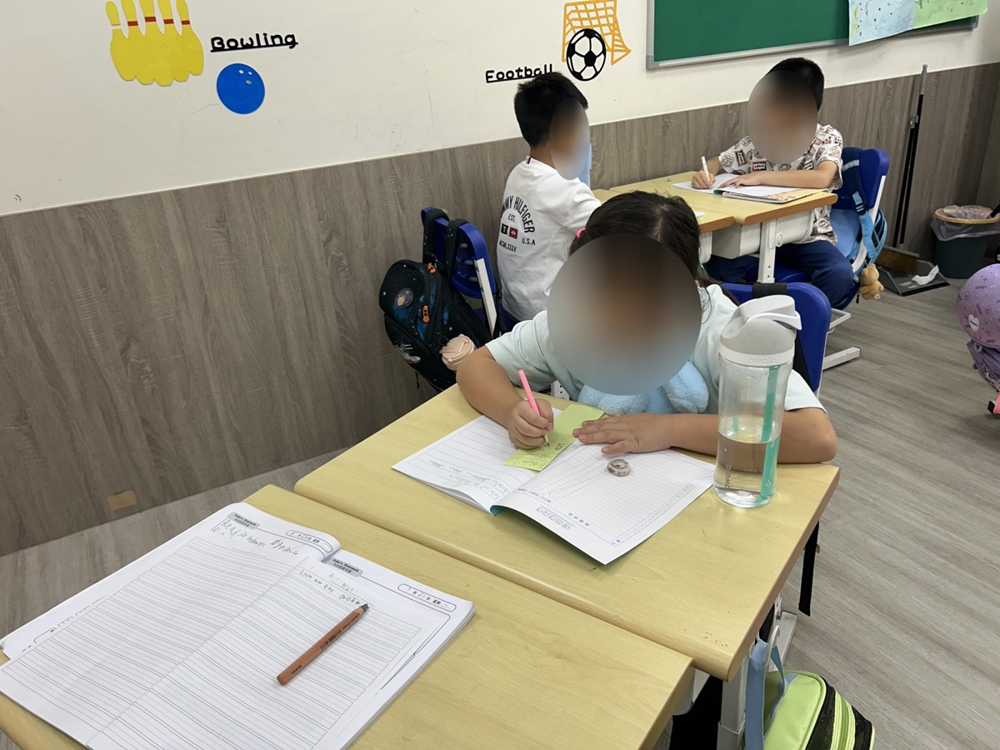
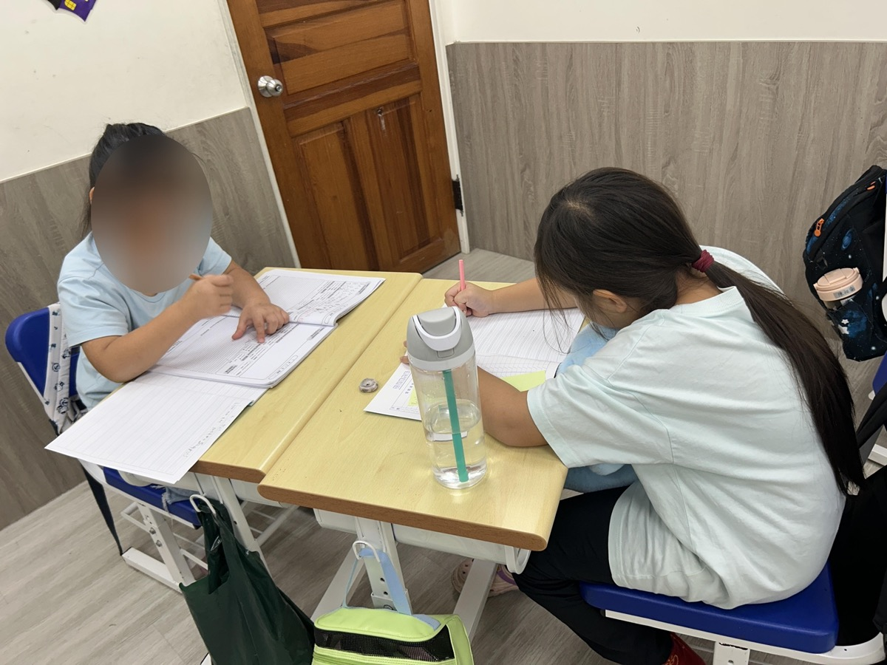
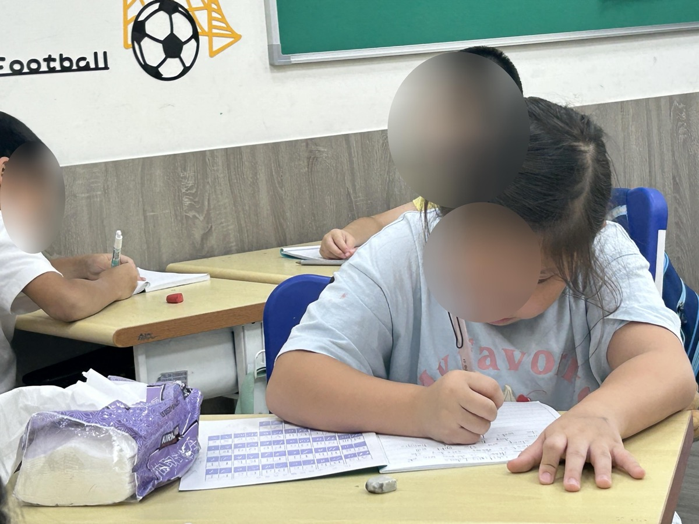
One grammatical issue all students seem to encounter is the issue of question words and making questions. To structure our thinking about questions, we are using the Frayer model to think more deeply about letters, words, sentences and questions.
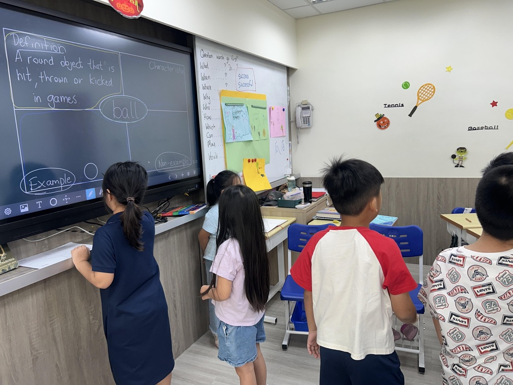
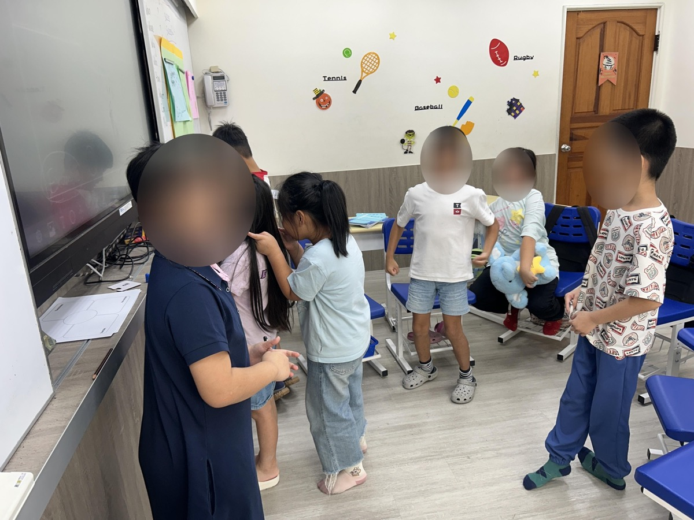
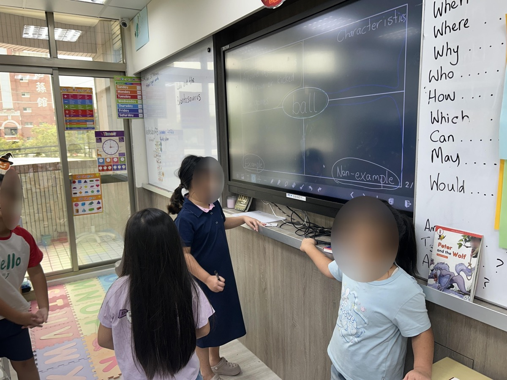
We continue to develop our understanding of how animals are classified. First we looked at many different animals and tried to put them into groups. Students struggled to understand the characteristics of the different classes of animals. The next step is to do the thinking routine Claim. Support. Question. to examine different classes of animals.
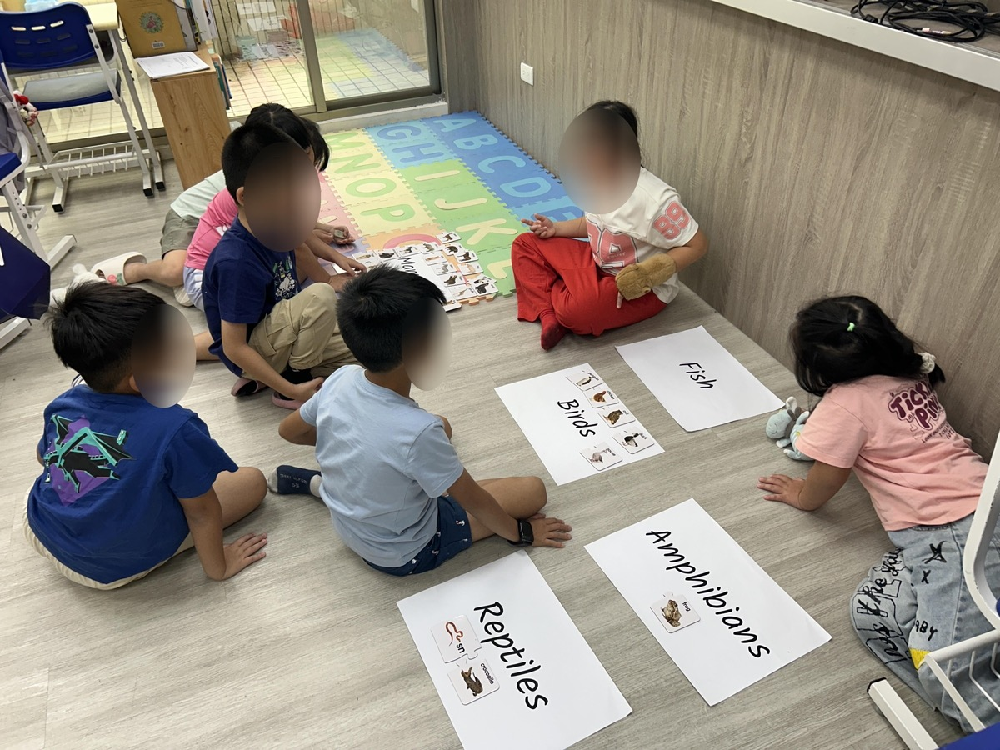
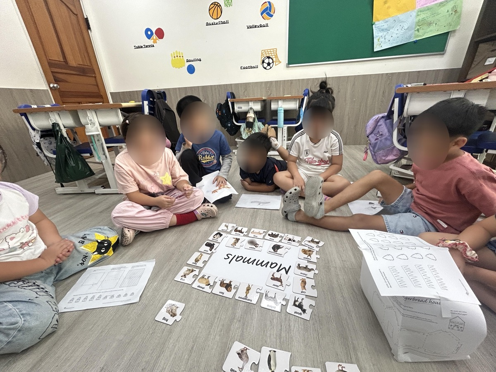
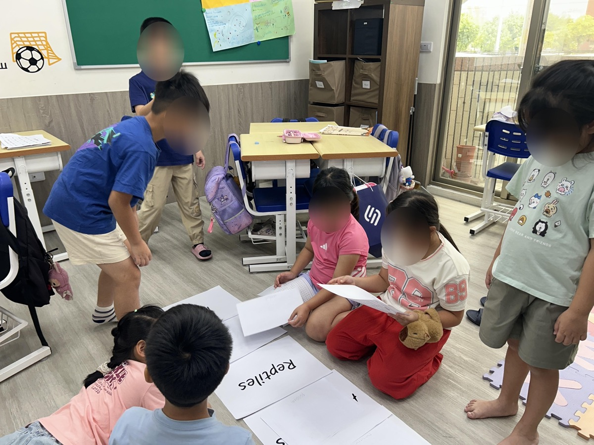
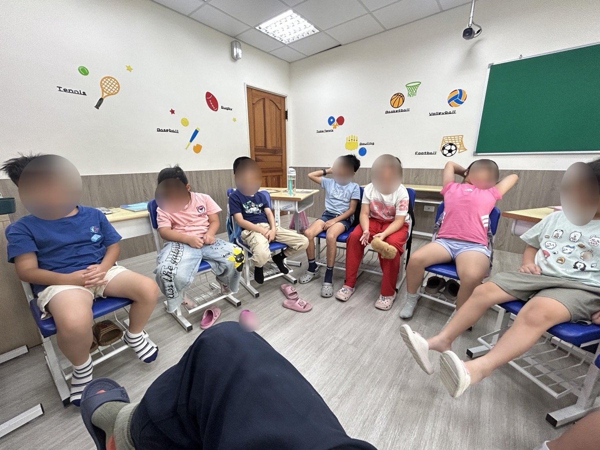